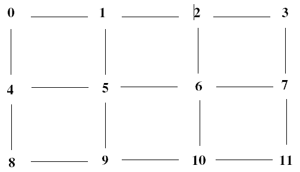
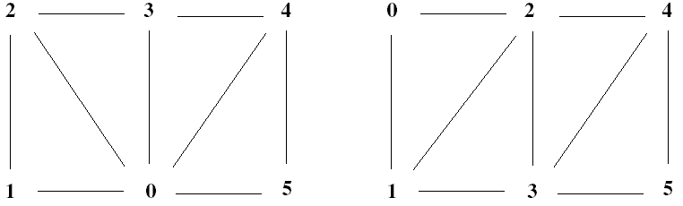

A polygon object represents one or more polygons that share a given set of vertices and rendering attributes. All polygons must be convex—that is, a line connecting any pair of vertices on the polygon cannot fall outside the polygon. Concave polygons can be converted to a set of convex polygons using the IDLgrTessellator object.
An IDLgrPolygon object is an atomic graphic object ; it is one of the basic drawable elements of the IDL Object Graphics system, and it is not a container for other objects.
Polygon objects can be used in a wide variety of graphic displays. Consider consulting the following topics for information on improving the performance of polygon creation and rendering:
IDLgrPolygon objects consist of a set of vertices and, optionally—via the POLYGON keyword—a connectivity array describing how those vertices are to be connected to form one or more polygons. Internally, IDL can identify three special types of polygonal meshes that may be represented very efficiently and therefore displayed substantially faster than individually described polygons. These special mesh types are characterized by repetitive patterns in the connectivity of the vertices. In performance terms, it is to your advantage to utilize this optimization whenever possible by appropriately preparing the connectivity list according to the rules described for the corresponding type of mesh. The special mesh types are as follows:
A quad strip is a connected set of four-sided polygons. To take advantage of accelerated quad strips, the connectivity should be set up so that the first and last vertex for one quad are the same as the second and third of the previous quad.
|
 |
For example, to use a quad strip optimization for the polygons shown previously, the connectivity for the vertices should be as follows:
verts = [v0, v1, v2, v3, v4, v5, v6, v7, v8, v9, v10 ,v11]
oPoly = OBJ_NEW(IDLgrPolygon, verts, $
POLYGON=[4, 0, 1, 5, 4, $
4, 1, 2 ,6, 5, $
4, 2, 3, 7, 6, $
4, 4, 5, 9, 8, $
4, 5, 6, 10, 9, $
4, 6, 7, 11, 10])
An alternate connectivity list that still uses quad strip optimization can also be used as in the following example, which orients each quad in the opposite direction of the first example.
oPoly = OBJ_NEW('IDLgrPolygon', verts, $
POLYGON=[4, 4, 5, 1, 0, $
4, 5, 6, 2, 1, $
4, 6, 7, 3, 2, $
4, 8, 9, 5, 4, $
4, 9, 10, 6, 5,$
4, 10, 11, 7, 6])
A triangle fan is a set of connected triangles that all share a common vertex. To take advantage of accelerated triangle fans, the connectivity should be set up so that the first vertex in every triangle is the common vertex, and the second vertex is the same as the last vertex of the previous triangle, as shown below.
|
 |
For example, to use a triangle fan optimization for the polygons shown in the left side of the figure, the connectivity for the vertices should be as follows:
verts = [v0, v1, v2, v3, v4, v5]
oPoly = OBJ_NEW(IDLgrPolygon, verts, $
POLYGON=[3, 0, 1, 2, $
3, 0, 2, 3, $
3, 0, 3, 4, $
3, 0, 4, 5])
A triangle strip is a set of connected triangles, each of which share two vertices with the previous triangle. To take advantage of accelerated triangle strips, the connectivity should be set up so that the first two vertices in every triangle must have been in the previous triangle and ordered in the same direction (counter-clockwise or clockwise) and the final vertex must be new, as shown in the right side of the previous figure.
For example, to use the triangle strip optimization for the polygons shown in the right-hand figure, the connectivity for the vertices should be as follows:
verts = [v0, v1, v2, v3, v4, v5]
oPoly = OBJ_NEW(IDLgrPolygon, verts, $
POLYGON=[3, 0, 1, 2, $
3, 2, 1, 3, $
3, 2, 3, 4, $
3, 4, 3, 5])
No limits are imposed on the number of meshes or types of meshes within any given polygon object. A single POLYGON keyword value might contain any combination of quad strips, triangle strips, triangle fans, or non-specialized polygons.
As the length of the strips or fans grows, and as the percentage of vertex connections that are optimized by the rules described above increases, the performance upgrade becomes more perceptible. The optimizations are a result of minimizing the time required to perform vertex transforms. If the drawing of the polygons are otherwise limited by fill-rate (as might occur on some systems if texture-mapping is being applied, for instance), these optimizations may not be of significant benefit. In any case, performance will not be hindered in any way by utilizing these specialized meshes, so it is suggested that they be applied whenever possible.
Note: The IDLgrSurface object always takes advantage of the quad mesh optimization automatically without programmer intervention.
For polygonal meshes that describe a closed shape (for example, a sphere), it is often wasteful to spend any time rendering the polygons whose normal vector faces away from the eye because it is known that the polygons whose normals face toward the eye will obscure those back-facing polygons. Therefore, for efficiency, it may be beneficial to employ back-face culling, which is simply the process of choosing to skip the rasterization of any polygons whose normal vector faces away from the eye.
On an IDLgrPolygon object, set the REJECT property to a value of 1 to enable back-face culling.
For IDLgrPolygon objects, normal vectors are computed by default at each vertex by averaging the normals of the polygons that share that vertex. These normals are then used to compute illumination intensities across the surface of the polygon. Computing default normals is a computationally expensive operation. Each time the polygon is drawn, this computation will be repeated if the polygon has changed significantly enough to warrant a new internal cache (for example, if the connectivity, vertices, shading, or style has changed). In some cases, the normals do not actually change as other modifications are made. In these cases, the expense of default normal computation can be bypassed if the user provides the normals explicitly (via the NORMALS keyword). These normals can be computed by using the COMPUTE_MESH_NORMALS routine. The resulting normals, if passed in through the NORMALS keyword of the IDLgrPolygon object, will be reused every time the polygon is drawn (without further computation) until they are replaced explicitly by the user.
See IDLgrPolygon::Init .
Objects of this class have the following properties. See IDLgrPolygon Properties for details on individual properties.
In addition, objects of this class inherit the properties of all superclasses of this class.
This class has the following methods:
In addition, this class inherits the methods of its superclasses (if any).
|
5.0 |
Introduced |
|
5.6 |
Added CLIP_PLANES property |
|
6.1 |
Added ALPHA_CHANNEL, AMBIENT, DIFFUSE, EMISSION, SHININESS, and SPECULAR properties |
|
6.4 |
Added the SHADER property Added GetVertexAttributeData, SetVertexAttributeData, GetMultiTextureCoord, and SetMultiTextureCoord methods |